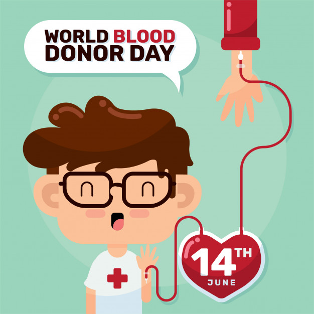

To ensure the safety of blood donation for both donors and recipients, all volunteer blood donors must be evaluated to determine their eligibility to give blood.
To give blood you must:
Be in general good health.
Be at least 17 years old. (If you are 16 you
can donate with a CBC consent
form signed by your
parent). There is no upper age limit as
long as you have no health restrictions.
Be at least 5' 4" tall and weigh at least 110 pounds. If you
are under 5' 4" you will need to weigh more than 110 pounds to
safely donate.
Have a photo ID. (It's helpful to also have your CBC Donor ID
card).
Before donating you should:
Get a good night's sleep.
Eat a nourishing meal.
Drink plenty of fluids.

How long before you can donate again:
Donation Type
Frequency
Whole blood donation
56 days (8 weeks)
Platelet donation
7 days (up to 24 times a year)
Plasma donation
28 days (4 weeks)
Double Red Blood Cells donation
112 days (16 weeks)
Why you may NOT be allowed to give blood:
Your Health
Hepatitis after age 11.
IV drug use (even one time).
Anyone with symptoms or laboratory evidence of AIDS
or who are considered to have an increased risk for contracting
AIDS.
Malaria (permanent deferral).
Your Travel
Anyone who has spent more than three months in the
United Kingdom (England, Scotland, Wales, Northern Ireland, Channel
Islands or Isle of Man, Gibraltar, or the Falkland Islands) from
1980 through 1996, or who have received beef insulin since
1980.
Since 1980, anyone who has spent five or more years
in Europe (including the U.K.).
Anyone who has spent six months or more associated
with military bases in Europe from 1980 through 1996.
Why you may NOT be allowed to give blood RIGHT NOW:
Your Health
Cold or flu symptoms, including a cough, sore
throat and/or fever.
24 hour deferral period after certain dental work,
including root canal, oral surgery, extraction of wisdom teeth.
(You must be asymptomatic in all instances and all packing must be
removed).
Pregnancy, miscarriage or abortion. There is a six
week deferral period after delivery or termination
of pregnancy.
Blood Transfusion - defer one year.
Mononucleosis - must be fully recovered.
Dental - Packing and sutures must be removed.
Mononucleosis - Must be fully recovered and no
incidence of jaundice.
Your Travel
Travel to certain countries may prevent you from
donating blood, temporarily.
The Food and Drug Administration (FDA) has strict
policies in place to prevent the theoretical risk of spreading mad
cow disease in the blood supply. Check with CBC if you have
traveled to the United Kingdom and Europe.
Travel to Central America, South America, Africa
and China can mean a one year deferral due to
high concentrations of certain diseases,
including malaria.
Check with your blood center if you have questions
about these common travel-related deferrals.
Your Medications
Most medications taken within 24 hours
are acceptable.
Antibiotics are not acceptable within 24
hours
of a donation. (Unless being taken for prevention, e.g. acne or
roasacea).
Consult with a nursing supervisor or mobile
blood drive team leader about the deferral period if you have
received immunizations or injections.
If symptom free, there is no deferral period for
the flu vaccine or pneumonia vaccine.
The flu vaccine contains dead viruses and is not cause for
deferral.
Contact CBC for vaccinations other than flu or pneumonia.
Live vaccines may prevent you from donating blood. You may be
deferred for up to one month if you have recently received measles,
mumps or rubella vaccinations.
Shingles, Hepatitis B vaccine and Botox are all one-month
deferalls.
There are multiple vaccines that are two-week deferrals.
Donors with well-established (not recently
diagnosed) diabetes controlled by diet, oral medications and/or
insulin therapy are eligible
to donate.
Donors with controlled high blood pressure by diet,
oral medications are eligible to donate.
Your Body Art
Ear or Body Piercing under non-sterile conditions -
one year deferral.
Tattoo - one year deferral, unless performed in a
licensed tattoo parlor in Ohio or Kentucky.
Other health or travel questions you may have
Ask a CBC professional about:
History of Yellow Jaundice not associated with
Hepatitis.
History of heart disease, heart attack, stroke or
open heart surgery.
Kidney disease.
Diagnosis, treatment or positive test for a
sexually transmitted disease.
Hepatitis exposure.
History of cancer.
Travel outside the U.S. or Canada in the last 12
months.
If stationed in Europe with the military between
1980 and 1996.
You CANNOT get AIDS from Donating Blood
Only sterile, disposable equipment is used throughout the
donation process, which makes it virtually impossible to contract a
disease from donating blood.